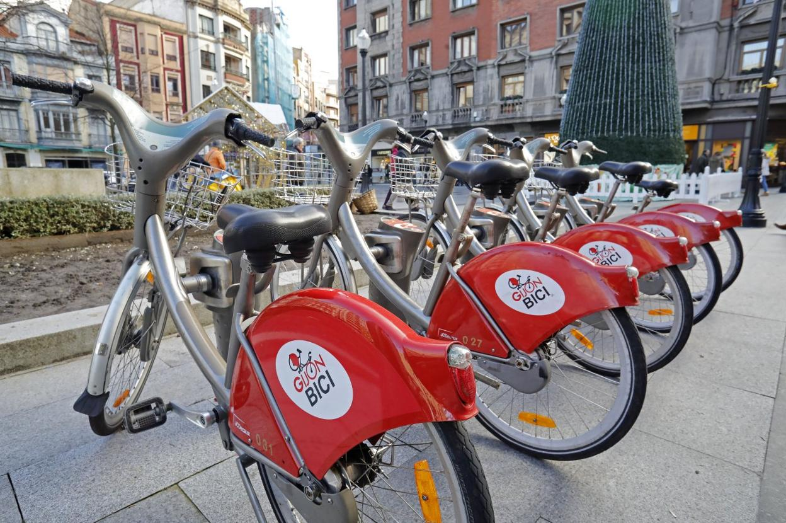

Gijón(en asturiano Xixón) es una ciudad española con la categoría histórica de villa. Es el único núcleo de población de la parroquia del mismo nombre.
Su concejo —denominación que reciben los municipios en el Principado de Asturias es el más poblado de la comunidad autónoma, con 267 706 habitantes en 2022.
Geográficamente, la ciudad y su término municipal se localizan junto a una bahía en la zona central de Asturias, a 28 km de Oviedoy 26 km de Avilés.
Allí forman parte de una gran área metropolitana que abarca veinte concejos de la región. Esta área, vertebrada por una densa red de carreteras y ferrocarriles, contaba con una población de 835 053 habitantes en 2011, los cuales la convierten en la séptima de España.
En la península ibérica, la villa y el concejo se sitúan en la parte central de la cornisa cantábrica y, a escala europea, en la zona sur del Arco Atlántico.
Desde su fundación en época romana, el desarrollo del núcleo urbano ha estado vinculado al de su puerto, que actualmente es líder en movimientos de graneles sólidos en España. Hasta fechas recientes, Gijón tuvo un carácter eminentemente industrial, lo que favoreció su gran crecimiento de los siglos xix y xx. No obstante, durante las últimas décadas, la crisis de la siderurgia y el sector naval han llevado a la reconversión de su tejido productivo, transformando la ciudad en un centro turístico, universitario, comercial y de I+D+i.
Así, además de contar con una red municipal de museos, alberga la Milla del Conocimiento Margarita Salas.
Esta comprende el complejo cultural de la Universidad Laboral, un campus universitario y un parque científico y tecnológico.
La ciudad es conocida por antonomasia como «capital de la Costa Verde» y es asimismo capital de la provincia marítima de Gijón.
Por el concejo discurre el Camino de Santiago en su ruta costera y en él tienen su sede el Consejo Consultivo del Principado de Asturias, la Radiotelevisión del Principado de Asturias y el Centro de Seguridad Marítima Integral de Salvamento Marítimo.
Toponimia
El origen del nombre de Gijón suscita desde hace tiempo un intenso debate entre los estudiosos. En fecha tan temprana como 1899, Miguel de Unamunoemitió ya su opinión, según la cual la palabra provendría del latín saxum «peñasco», lo cual tendría relación con las características geográficas del emplazamiento de la ciudad, cuyo núcleo primitivo se asentó en el gran promontorio que hoy se denomina Cerro de Santa Catalina y en el que se ubica el casco histórico de Cimadevilla. Otras interpretaciones de la época buscan el origen del término en voces celtas como:
- gy: «agua» + om: «rodeada» (según Bullet);
- hitón: «gran hito» u »obra maestra» (según Uría) o
- egi + gon: «sitio estrecho y recogido, alto y bueno» (según Becerro de Bengoa).
Basándose en el primitivo carácter de Gijón como asentamiento militar, Sánchez propone la palabra sessio, que aparece en expresiones como sessio legionis o in sessione legionum, teoría que reforzaría la presencia de unas «aras sestianas» o «aras sessianas» que algunos autores sitúan en la Campa Torres y Sánchez interpreta como «aras de la sessio» o «aras sessianas», es decir, «aras gijonesas». Otras explicaciones han buscado el origen del término en antropónimos como gegionus, gegion, segius (según Manzanares); sassonius (según Schulze) o hipotéticos *iaionus, *ieionus (según García Arias). Por otra parte, según sostiene el filólogo Xosé Lluis García Arias, la enormemente popular identificación de Gijón con la Gigia, citada por Ptolomeo, en realidad no tendría nada que ver con la urbe asturiana sino que correspondería a una población situada en lo que hoy es territorio leonés, quizá próxima al río Cea. También cabe suponer que puesto que la ciudad fue fundada por la Legio VII Gemina deba de ahí su nombre
Oficialidad
El Estatuto de Autonomía del Principado de Asturiasprevé la protección, uso y promoción de la lengua asturiana en la comunidad autónoma. La Ley 1/1998, de 23 de marzo, de uso y promoción del bable/asturiano desarrolló la anterior norma y dispuso que los topónimos de la región tendrían la denominación oficial en su forma tradicional. Posteriormente, y siguiendo los pasos descritos por el Decreto 98/2002, de 18 de julio, por el que se establece el procedimiento de recuperación y fijación de la toponimia asturiana, el Gobierno de la comunidad autónoma oficializó los nombres vernáculos de todos los núcleos de población del concejo de Gijón. Así, por ejemplo, el topónimo de la capital municipal pasó a ser bilingüe: «Gijón/Xixón».
No obstante, el Decreto 98/2002 indica que para la alteración de la denominación de los concejos deberá tramitarse un expediente conforme a lo dispuesto en la Ley 7/1985, de 2 de abril, reguladora de las Bases del Régimen Local.Según esta última norma, los cambios de denominación de los municipios españoles solo tendrán carácter oficial cuando se publiquen en el Boletín Oficial del Estado. Dado que esto aún no ha sucedido para Gijón, a día de hoy el nombre castellano es el único oficial para el concejo.
Simbolos
El escudo de Gijón, de cuyo uso se tiene constancia desde 1649, representa a Don Pelayo, primer rey de Asturias, sosteniendo una espada en su mano derecha y la Cruz de la Victoria prolongada con un báculo en la mano izquierda. La leyenda vincula a Don Pelayocon Munuza, quien fuera gobernador musulmán de Gijón y con quien entró en lucha ofendido por el matrimonio no consentido entre el gobernador y la hermana de este. Preside el conjunto la corona real española.
La bandera de Gijón es rectangular, de un largo igual a tres medios su ancho, blanca, tiene un ribete rojo en sus cuatro lados de un ancho equivalente a un sexto de su largo y lleva el escudo municipal en el centro en versión polícroma. Tiene su origen en la matrícula asignada a la provincia marítima de Gijón por el Gobierno de España ―Real Decreto de 30 de julio de 1845―.
Geografia
Gijón está situado en el centro de la costa cantábrica del Principado de Asturias, España, en el suroeste de Europa, al norte de la península ibérica, sobre una rasa litoral en las estribaciones de la cordillera Cantábrica. Forma parte de la vertiente hidrográfica cantábrica y se sitúa en su punto más alto (Pico Cima) a 737 m s. n. m.. El punto más alto de la zona urbana (Ceares) se sitúa a 59 m s. n. m.. El término municipal de Gijón tiene una superficie de 182,1 km² y una forma vagamente rectangular. La ciudad, que ocupa una superficie aproximada de 13,9 km², está situada en el tramo costero central del concejo, en una bahía dividida por el Cerro de Santa Catalina(Cimadevilla) que separa la playa de San Lorenzo al este, del Puerto Deportivo, playas de Poniente y Arbeyal, astilleros y puerto de El Musel, al oeste.
El término municipal de Gijón limita con los siguientes concejos: Carreño al noroeste, Corvera al oeste, Llanera al suroeste, Siero al sur y Villaviciosa al este. Con Sariego sus límites llegan a unirse en un pequeño punto correspondiente a la Peña de los Cuatro Jueces, así llamada por constituir la confluencia de los concejos de Gijón, Villaviciosa, Sariego y Siero.
Hidrografia
Gijón forma parte de la vertiente hidrográfica cantábrica. Los ríos más destacables del concejo son el río Aboñoy el río Piles.El río Aboño es el de mayor tamaño y caudal. Nace en el Alto de la Miranda (Llanera) y desemboca en el límite entre el concejo de Gijón y el de Carreño formando así la ría de Aboño, fuertemente industrializada en las últimas décadas. Este río se encuentra embalsado a la altura de San Andrés de los Tacones, al oeste del concejo al lado de la autopista A-66, y sirve de abastecimiento de la empresa ArcelorMittal.
El principal afluente del Aboño es el río Pinzales, de similar importancia hidrológica. El Pinzales nace en el concejo de Siero y atraviesa el concejo de Gijón de sur a norte. El río Piles, de gran importancia por atravesar parte del casco urbano de la ciudad, es un río corto y de caudal escaso cuyos 10 o 15 kilómetros transcurren íntegramente dentro de los límites del municipio, atravesando la parte este de la ciudad hasta desembocar en la playa de San Lorenzo. Existen otros arroyos menores (Peña Francia, Santurio, San Miguel, Tremañes, Cutis, Pilón, etc), de los cuales el más importante es el de La Ñora, que forma un tramo de la frontera con el concejo de Villaviciosa y desemboca en la playa del mismo nombre.
Clima
El clima de Gijón, determinado por la presencia del mar y la baja altitud del concejo, es un clima oceánico, con abundantes precipitaciones desde el otoño hasta los primeros días de la primavera, y un tiempo más estable y cálido en verano. Según los datos ofrecidos por la Agencia Estatal de Meteorologíapara la estación meteorológica de Gijón (período 1971-2000), la media del mes más frío (enero) fue de 8,9 °C, la media del mes más cálido (agosto) fue de 19,7 °C y la temperatura media anual es de 13,8 °C (media anual de máximas: 17,6 °C; media anual de mínimas: 9 °C). La nieve cubre ocasionalmente en el invierno los montes del concejo que rodean la ciudad y llega de forma esporádica al centro de la ciudad, con una media de un día de nieve anual.
La precipitación media anual es de 920 l/m². Ello se debe al denominado efecto de ladera, según el cual las lluvias más intensas se localizan en las zonas más altas y las mínimas en zonas costeras del centro y el occidente. Coincidiendo con la época de menos lluvias se dan situaciones de aridez y sequía (el 11 % de los meses hay aridez y el 9 % el déficit hídrico es grave).
Los vientos son esporádicos y estacionales. En invierno soplan preferentemente del sureste, templados y cálidos, a causa de la retirada hacia el sur del anticiclón de las Azores, con lo que las borrascas atlánticas siguen una trayectoria más meridional. En verano la situación se invierte, predominando vientos del nordeste, fríos y secos.
| Parámetros climáticos promedio de Gijón | |||||||||||||||
|---|---|---|---|---|---|---|---|---|---|---|---|---|---|---|---|
| Mes | Ene. | Feb. | Mar. | Abr. | May. | Jun. | Jul. | Ago. | Sep. | Oct. | Nov. | Dic. | Anual | ||
| Temp. máx. abs. (°C) | 23.6 | 23 | 27 | 28 | 31.8 | 36.4 | 31.4 | 30 | 34.6 | 30.4 | 26.1 | 25 | 36.4 | ||
| Temp. máx. media (°C) | 13.1 | 13.8 | 14.9 | 15.6 | 17.8 | 20.2 | 22.4 | 23.2 | 21.8 | 19.0 | 15.6 | 14.0 | 17.6 | ||
| Temp. media (°C) | 8.9 | 9.6 | 10.7 | 11.8 | 14.3 | 16.9 | 19.2 | 19.7 | 17.9 | 15.0 | 11.6 | 9.9 | 13.8 | ||
| Temp. mín. media (°C) | 4.7 | 5.4 | 6.6 | 8.1 | 10.9 | 13.6 | 16.0 | 16.2 | 14.1 | 11.0 | 7.6 | 5.8 | 10.0 | ||
| Temp. mín. abs. (°C) | -9.6 | -6.0 | -3.0 | -1.4 | 2.2 | 5.8 | 5.6 | 5.2 | 4.7 | 2.6 | -3.4 | -6.8 | -9.6 | ||
Servicios
Educación
Colegios e institutos
En Gijón existen 75 colegios donde se pueden impartir Infantil y Primaria y 28 institutos donde se puede cursar ESO y Bachillerato, la mayoría públicos.
Estudios Superiores
En Gijón se sitúan centros docentes de dos universidades, la Universidad de Oviedo y la Universidad Nacional de Educación a Distancia.
Universidad de Oviedo
El campus de Gijón de la Universidad de Oviedo, que se ubica en las parroquias de Somió, Cabueñes y Bernueces, sobre fincas de la antigua Universidad Laboral de Gijón, incluye los siguientes centros docentes:
- Escuela Politécnica de Ingeniería de Gijón.
- Escuela Superior de la Marina Civil.
- Facultad de Comercio, Turismo y Ciencias Sociales Jovellanos.
- Facultad de Enfermería de Gijón.
Universidad Nacional de Educación a Distancia (UNED)
Gijón cuenta también con la delegación de la UNED en Asturias, donde se pueden cursar a distancia distintas disciplinas.
Otros estudios
- Escuela Superior de Arte Dramático y Profesional de Danza de Asturias:
- La ESAD imparte sus clases en la Universidad Laboral desde 2006.
- Conservatorio Profesional de Música y Danza de Gijón:
- Fundado en 1986, está situado en la Universidad Laboral desde 2007 (anteriormente se encontraba en el barrio de El Coto, en el antiguo Cuartel de El Coto), donde se estudian 18 especialidades, entre ellas la gaita (desde 2006). Cuenta con una orquesta sinfónica, banda, orquesta de cuerdas, la LittleBand y la BigBand; además de alrededor de 60 profesores y 600 alumnos.
- Oficial de Idiomas de Gijón:
- Ubicada en el barrio de El Polígono imparte certificados y clases de inglés, francés y alemán.
Sanidad
Gijón pertenece al área V del SESPA junto Carreño y Villaviciosa siendo su hospital principal el Hospital Universitario de Cabueñes. También son relevantes los hospitales concertados de Jove y Cruz Roja así como los privados del Hospital Begoña, Hospital Covadonga y un futuro hospital de Quirón en Nuevo Gijón. En otros edificios destaca la Residencia Mixta en Pumarín, el Centro Sanitario Marítimo, todos los centros de salud ubicados en varios barrios y el gran número de clínicas privadas, algunas con gran prestigio.
Empresas municipales
- Empresa Municipal de Aguas (EMA): Potabilización y transvase de aguas
- Emtusa: Transporte público
- Emulsa: Limpieza y medio ambiente
- Divertia: Eventos y turismo
- Impulsa: Proyectos y pequeñas empresas
- Vivienda: Gestión de la vivienda pública
Transporte
Terrestre
El artículo 7 de la Ley sobre Tráfico, Circulación y Seguridad Vial aprobado por RDL 339/1990 atribuye a los municipios unas competencias suficientes para permitir, entre otras, la inmovilización de los vehículos, la ordenación y el control del tráfico y la regulación de sus usos. Gijón cuenta con una amplia zona azul que se extiende por todo el centro y otros barrios así como con diversas zonas verdes en las que el establecimiento máximo permitido es de 8 horas. Así mismo, gran parte de El Centro y prácticamente la totalidad de Cimadevilla son calles peatonales y de acceso restringido al vehículo privado.
Red viaria principal
Gijón cuenta con una buena conexión a la red nacional de autovías y autopistas que la hacen estar bien comunicada con otras ciudades tanto de Asturias como del resto de España.
| Tipo | Identificador | Denominación | Itinerario |
| Autovías | A-8 | Autovía del Cantábrico | Baamonde - Avilés - Gijón - Llanes - Torrelavega - Solares - Bilbao - San Sebastián e Irún |
|---|---|---|---|
| A-66 | Autovía Ruta de la Plata | Gijón - Oviedo - Mieres - Pola de Lena - León - Benavente - Zamora - Salamanca - Cáceres - Mérida - Sevilla | |
| GJ-81 | Autopista Acceso Sur a Gijón | Gijón (Centro ciudad) - Ronda Sur de Gijón (Autovía del Cantábrico A-8 ) | |
| AS-I | Autovía Minera | Gijón - Pola de Siero - Langreo - Mieres | |
| AS-II | Autovía Industrial | Gijón - Lugo de Llanera - Oviedo | |
| Otras carreteras | N-632 | Carretera Nacional 632 | Canero - Cudillero - Muros del Nalón - Soto del Barco - Avilés - Gijón - Villaviciosa - Colunga - Caravia - Ribadesella |
| GJ-10 | Hipotética Ronda Interior de Gijón | Gijón (Enlace de Tremañes) - El Empalme | |
| AS-19 | Carretera El Empalme - Avilés | El Empalme - Prendes - Tabaza - Avilés | |
| AS-356 | Carretera Gijón - Lloreda por Somió | Gijón - Somió - Lloreda | |
| AS-376 | Carretera Carbonera | Gijón - Alto de la Madera - Noreña - El Berrón - La Gargantada - Langreo | |
| AS-377 | Carretera Gijón-Siero | Gijón - Vega de Poja - Pola de Siero | |
| AS-381 | Carretera Oviedo-Gijón | Oviedo - Lugones - Pruvia - Porceyo - Gijón |
Senderismo
En Gijón existen varios senderos homologados, tanto de Gran Recorrido (GR), homologados por la Federación Española de Deportes de Montaña y Escalada, como de Pequeño Recorrido (PR) y Senderos Locales (SL), homologados por la Federación de Deportes de Montaña, Escalada y Senderismo del Principado de Asturias. Los senderos GR-100 (Ruta de la Vía de la Plata) y GR-108 (Travesía Anderiega) comienzan en Gijón, mientras que el GR-204 (Senda Costera) lo atraviesa. En cuanto a los PR, hay dos en el municipio, el PR-AS 170 (Ruta del Río Ñora) y el PR AS-118 (Ruta del Fario); y como SL, el SL-AS 9 (Camino de Santa Olaya), el SL-AS 10 (Valle y Arroyo de Rioseco), y el SL-AS 11 (Monte Deva).
Otras sendas no homologadas existentes en el concejo son las de Cervigón, la del río Peñafrancia, la del río Piles y la del río Llantones.
Camino de Santiago
El Camino de Santiago del Norte (o Camino de la Costa), que en su tramo asturiano coincide con el Sendero Europeo E-9, discurre a lo largo de 19 km por el de Gijón. En el km. 3 se encuentra el actual albergue de peregrinos (servicio que ofrece el campin de Deva). A partir de este lugar, la ruta oficial transcurre por las parroquias de Cabueñes y Somió hasta el río Piles, donde se le une la ruta alternativa de la Senda del Peñafrancía, que habremos podido tomar al poco de salir del campin de Deva. Atravesada la ciudad durante 7 km, el Camino continúa por Veriña y asciende hacia Poago y Monte Areo, entrando en el concejo de Carreño.
Bicicleta
Gijón cuenta con una red urbana de carriles bici diseñados para poder comunicar algunas zonas de la ciudad entre sí, así como con una vía verde, la Vía verde de la Camocha. Aun así la red presenta deficiencias, especialmente en la comunicación de ejes, para ello; el Ayuntamiento de Gijón planea la construcción de 33 km nuevos de infraestructura ciclista, lo que duplicará la existente a unos 65 km.
Además la ciudad cuenta con el plan Gijón-Bici, que permite disponer con la tarjeta ciudadana de una bicicleta propiedad del Ayuntamiento.
Autobuses urbanos
El servicio de transporte público de autobuses urbanos de Gijón está a cargo de la empresa Emtusa (Empresa Municipal de Transportes Urbanos S.A.) desde su creación en 1978. resta servicio al casco urbano de la ciudad así como a sus parroquias rurales y posee una flota de autobuses que recorren 25 líneas de servicio diario, de las que 5 ofrecen servicio nocturno, denominadas búho, que funcionan los fines de semana entre septiembre y junio y de forma diaria en periodo estival. También disponen de servicios especiales cuando existen acontecimientos que así lo requieran en la ciudad, como conciertos, partidos de fútbol, feria de muestras etc A lo largo de 2019 el servicio fue utilizado por 18 913 049 usuarios, un 1,56 % más que el año anterior.
El pago por la utilización del servicio puede realizarse en efectivo, a través de distintos abonos, tarjeta ciudadana, o la tarjeta CTA y es gratuito para todas las personas menores de 17 años.
Autobuses interurbanos
La estación de autobuses de Gijón se encuentra situada entre las calles Magnus Blikstad y Llanes, en Laviada, zona centro de la ciudad y permite la comunicación con otras localidades de Asturias así como a nivel nacional e internacional.
Se trata de una estación privada, perteneciente a la compañía ALSA quien la opera en exclusiva o a través de sus filiales.
La reducida y antigua estación espera su sustitución por otra de carácter municipal en la Nueva Estación Intermodal.
Existen también otras compañías privadas que operan líneas entre la ciudad y algunos de los concejos vecinos y que efectúan sus salidas o llegadas a la ciudad en alguna de las paradas habilitadas para los autobuses urbanos.
Ferrocarril
Gijón cuenta actualmente con una estación de tren principal que se encuentra situada en la calle Sanz Crespo, en el barrio de Laviada.
Es una estación provisional, cuya construcción fue motivada por las obras de soterramiento del ferrocarril en la ciudad y la adaptación a la red AVE, que sustituye a las antiguas estaciones de Gijón Cercanías y Jovellanos/La Braña con vistas a la construcción de una futura Estación Intermodal a la altura del parque de Moreda.
De esta estación parten las líneas C-1 de ancho ibérico y C-4, C-5 y C-5a de ancho métrico, pertenecientes a la red de Cercanías Asturias y que unen la ciudad con las principales localidades asturianas.
También parten de ella diversos servicios de Alvia que conectan con multitud de destinos nacionales.
Además de esta estación principal existen la estación de La Calzada situada en el barrio homónimo así como diversos apeaderos situados en las distintas parroquias rurales.
Cabe destacar que Gijón fue punto de partida y llegada de los trenes del Ferrocarril de Langreo, inaugurado en 1852, siendo así la cuarta línea de tracción de vapor en la península ibérica y la primera de carácter industrial, diseñada para el transporte de carbón de las minas de Langreo y Siero hasta el puerto de la ciudad.
La antigua Estación del Norte, que fue en su día la principal de la ciudad es actualmente el Museo del Ferrocarril de Asturias.
Transporte marítimo
El puerto cuenta con actividades comerciales, transporte de mercancías y actividad pesquera, siendo el primer puerto granelero español, el sexto en la clasificación general y el cuarto en cuanto a resultados de explotación. Su órgano rector es la Autoridad Portuaria de Gijón, de la que también depende el puerto deportivo.
Transporte aéreo
El aeropuerto de Asturias, que entró en servicio en 1968 es el único de la comunidad autónoma y por tanto el que da servicio al concejo, se encuentra situado en el término municipal de Castrillón, a 38 km de la ciudad y comunicado por autovía, existiendo también servicios de autobús cada hora. En 2022, tras sufrir un gran incremento en sus cifras, logró recuperar el tráfico previo a la pandemia de COVID-19 y fue utilizado por 1 454 763 pasajeros.